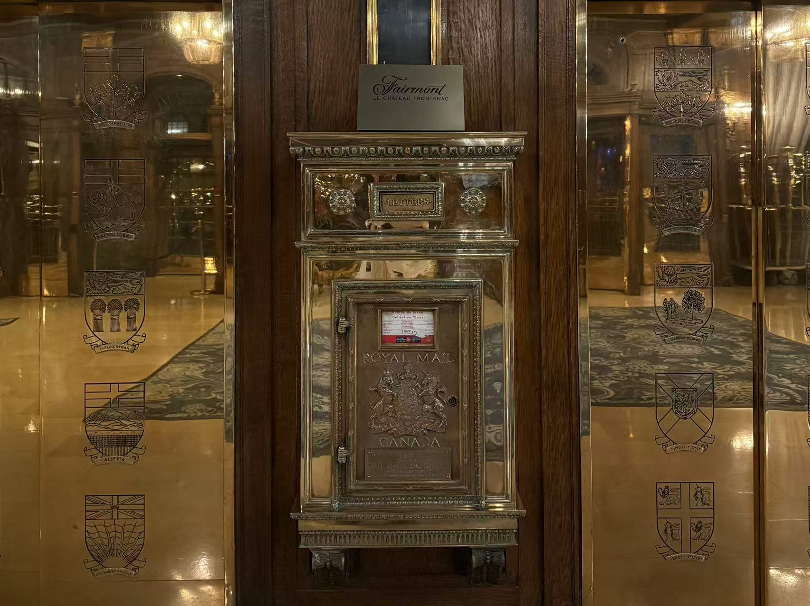
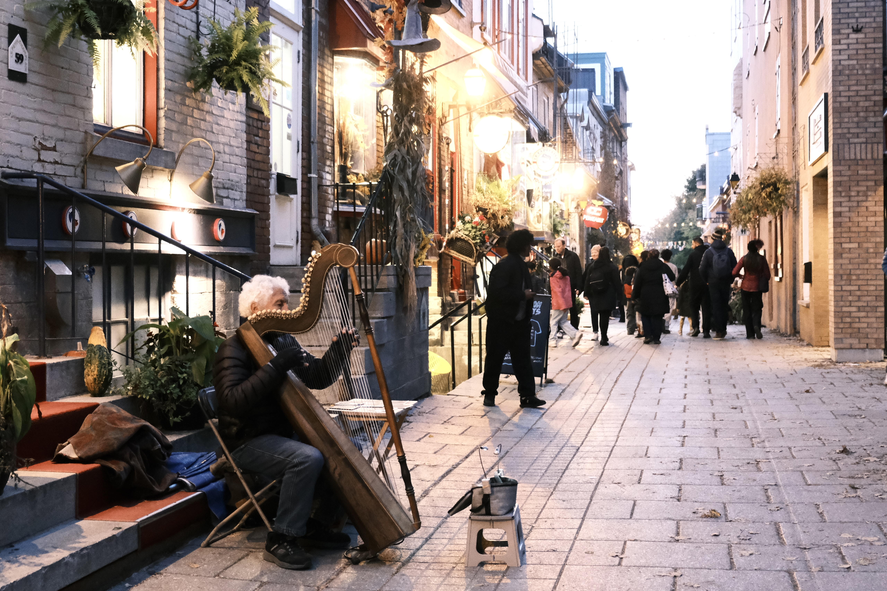
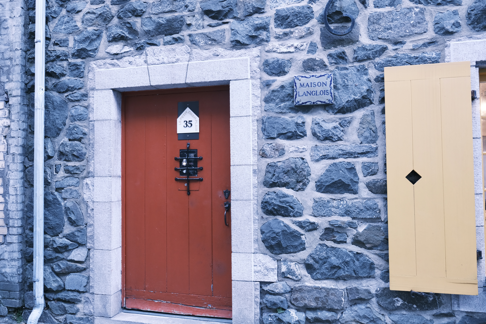
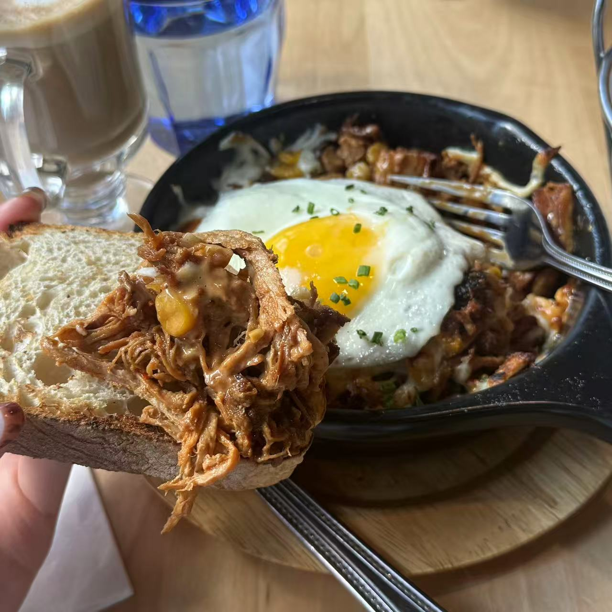
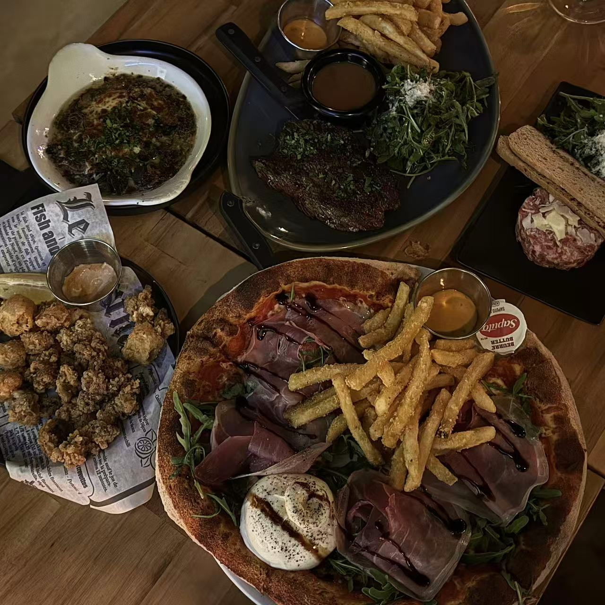
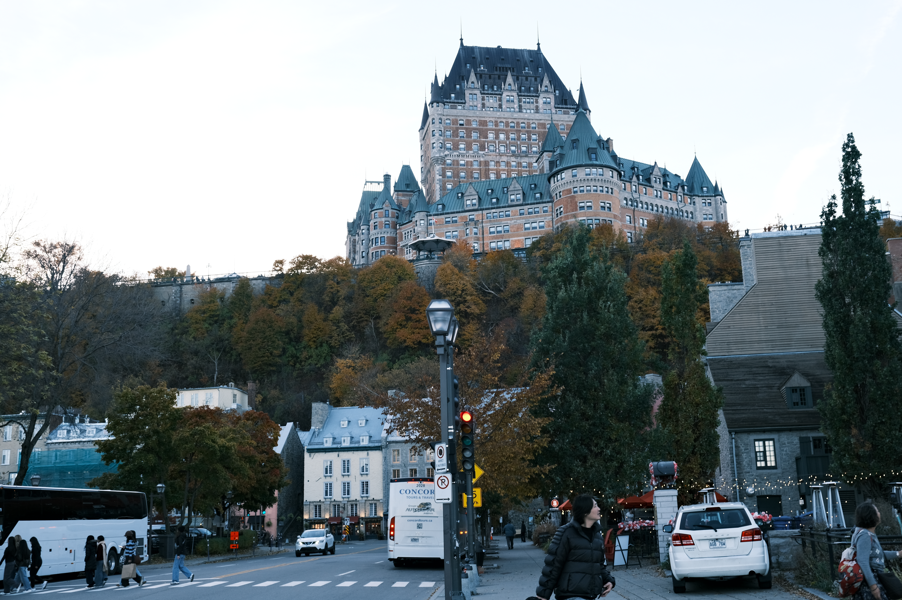
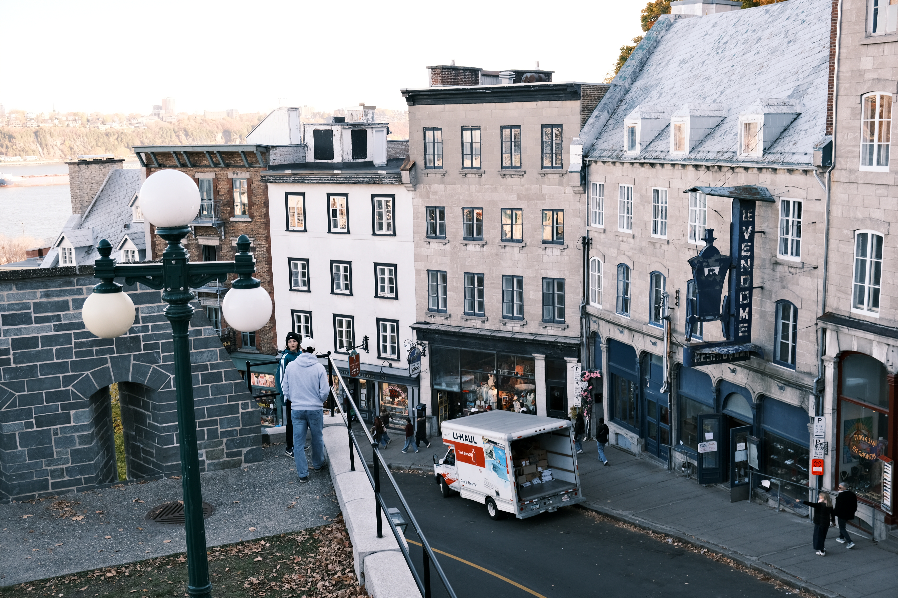
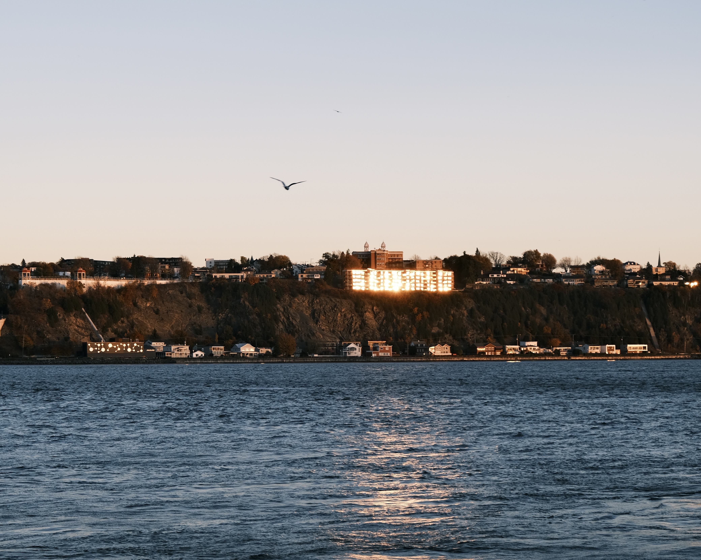
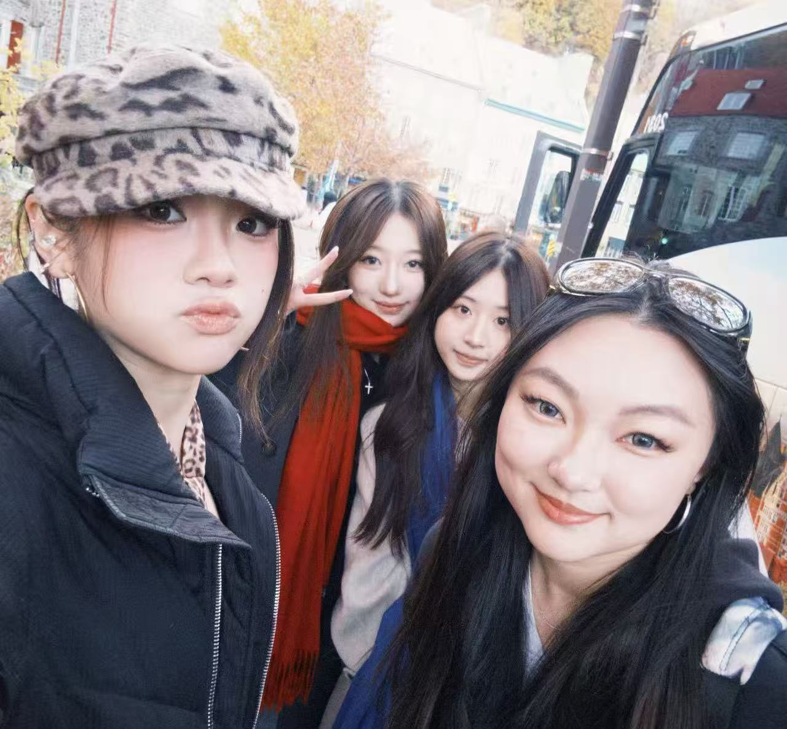

About This Trip
During this fall reading week, I travelled to Quebec for 3 days. Me and my friends visited Old city, where is the main filming location from K-drama《The Lonely and Great God》. We also tried local specialties, which were really delicious, and took photographs of the whole city views and sunsets.
Challenge and Solution
I used to connect my Fujifilm camera to a mobile app via Bluetooth, allowing me to save photos directly to my phone’s photo library. However, this transfer method required me to confirm each photo individually on the camera and only can transfer one pic at each time. With nearly 600 photos, this process was far too slow.
I searched online for a way to import multiple photos from my Fujifilm camera at once. I found that I could adjust the camera’s USB connection settings and connect it to my phone using a data cable. When I opened the Photo library, an Import option appeared, allowing me to browse all the photos from the camera and select multiple images to import at once. This made the transfer process much faster and more efficient.
《The Lonely and Great God》Filming Locations



During this trip, we visited many of the locations featured in the drama and recreated some of its scenes. It made me feel as though I were a character in the story.
A Taste of Quebec



We tried many local specialties, including smoked pork. The flavors were memorable, and the food was sooooo delicious!
City Views and Sunsets



Unlike Toronto, Quebec has architecture with a distinctly French character. We were also lucky enough to catch a beautiful sunset.
Results and Key Outcomes
Using camera to record my trip and share my experiences with others is a great way to preserve memories. (This is the photo with my friends!:3)
